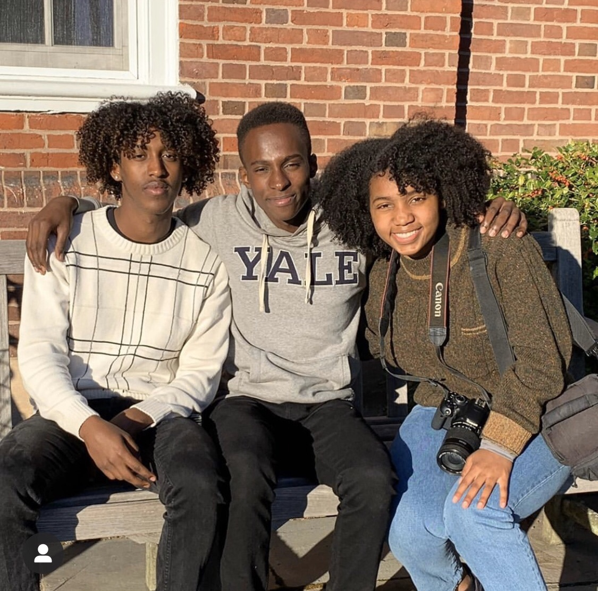

My time at so far has truly been what I imagined the ideal college experience would be (well, before COVID-19, that is). I've made some life-long friends, studied abroad, eaten so much free food, struggled with class work, applied for (and got!) my first internship with Google, and learned more about the world in such a short time. Now that I've reached the half-way mark in my undergraduate journey, I've been thinking a lot recently about my time so far. I can't wait to come back to start the second half this fall!
Sophomore Year Recap
Life at Yale


